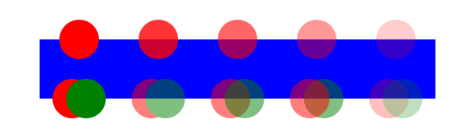

The SVG 2 rendering model will follow the rules defined by the Compositing and Blending specification.
Resolution: Seattle/Paris 2012 F2F day 3.
Owner: Nikos (Action 3332).
Status: Done.
3.1. Introduction
Implementations of SVG must implement the rendering model as described in this chapter, as modified in the appendix on conformance requirements which describes situations where an implementation may deviate. In practice variability is allowed based on limitations of the output device (e.g. only a limited range of colors might be supported) and because of practical limitations in implementing a precise mathematical model (e.g. for realistic performance curves are approximated by straight lines, the approximation need only be sufficiently precise to match the conformance requirements).
The appendix on conformance requirements describes the extent to which an actual implementation may deviate from this description. In practice an actual implementation may deviate slightly because of limitations of the output device (e.g. only a limited range of colors might be supported) and because of practical limitations in implementing a precise mathematical model (e.g. for realistic performance curves are approximated by straight lines, the approximation need only be sufficiently precise to match the conformance requirements).
3.2. The rendering tree
The components of the final rendered representation of an SVG document do not have a one-to-one relationship with the underlying elements in the document model. The appearance of the graphic instead reflects a parallel structure, the rendering tree, in which some elements are excluded and others are repeated.
Many elements in the SVG namespace do not directly represent a component of the graphical document. Instead, they define graphical effects, metadata, content to be used to represent other elements, or alternatives to be displayed under certain conditions. In dynamic documents, certain components of the graphic may be rendered or not, depending on interaction or animation. These non-rendered elements are not directly included in the rendering tree.
Because SVG supports the reuse of graphical sub-components, some elements are rendered multiple times. The individual renderings may have context-dependent styling and may be rasterized at different scales or transformations.
3.2.1. Definitions
- rendering tree
-
The rendering tree is the set of elements being rendered in an SVG document fragment. It is generated from the document tree by excluding non-rendered elements and inserting additional fragments for re-used graphics. Graphics are painted and composited in rendering-tree order, subject to re-ordering based on the paint-order property. Note that elements that have no visual paint may still be in the rendering tree.
- rendered element
-
An element that has a direct representation in the rendering tree for the current document. Includes a rendered instance of an element in a use-element shadow tree. Does not include elements that affect rendering as the source definition of re-used graphics but are not directly rendered themselves. See Rendered versus non-rendered elements
- non-rendered element
-
An element that does not have a direct representation in the rendering tree for the current document. It may nonetheless affect the rendering tree as re-used graphics or graphical effects. See Rendered versus non-rendered elements.
- re-used graphics
-
Graphical components that are included in the rendering tree but do not have a single direct equivalent element in the document model. They may be represented through shadow DOM elements (as in graphics re-used with a ‘
use’ element), or as image fragments generated as part of a graphical effect (as in patterns or masks). - never-rendered element
-
Any element type that is never directly rendered, regardless of context or display style value. It includes the following elements: ‘clipPath’, ‘
defs’, ‘desc’, ‘linearGradient’, ‘marker’, ‘mask’, ‘metadata’, ‘pattern’, ‘radialGradient’, ‘script’, ‘style’ and ‘title’; it also includes a ‘symbol’ element that is not the instance root of a use-element shadow tree. - renderable element
-
Any element type that can have a direct representation in the rendering tree, as a graphic, container, text, audio, or animation. It includes the following elements: ‘
a’, ‘circle’, ‘ellipse’, ‘foreignObject’, ‘g’, ‘image’, ‘line’, ‘path’, ‘polygon’, ‘polyline’, ‘rect’, ‘svg’, ‘switch’, ‘text’, ‘textPath’, ‘tspan’ and ‘use’; it also includes a ‘symbol’ element that is the instance root of a use-element shadow tree.A renderable element may or may not be rendered in a given document or point in time.
3.2.2. Rendered versus non-rendered elements
At any given time, every SVG element (or element instance in a use-element shadow tree) is either rendered or non-rendered. Whether an element is currently rendered or not affects not only its visual display but also interactivity and geometric calculations.
An element is not rendered in any of these five situations:
- never-rendered element types
- elements excluded because of conditional processing attributes
or ‘
switch’ structures - elements with a computed style value of
nonefor the display property - detached from the DOM tree
- descendent elements of other non-rendered elements
Non-rendered elements:
- have no visual effect on the graphic, except when they are used in the rendering of another element that references them.
- do not contribute to the net geometry of clipping paths or masks when they are descendants of a ‘clipPath’ or ‘mask’
- are not sensitive to pointer events
- cannot receive focus
- do not contribute to bounding box calculations
- are not considered when performing text layout
Non-rendered elements are not represented in the document accessibility tree. Nonetheless, they remain part of the document model, and participate in style inheritance and cascade.
3.2.3. Controlling visibility: the effect of the ‘display’ and ‘visibility’ properties
SVG uses two properties to toggle the visible display of elements that are normally rendered: display and visibility. Although they have a similar visible effect in static documents, they are conceptually distinct.
See the CSS 2.1 specification for the definitions of display and visibility. [CSS2]
Setting display to none results in the element not being rendered. When applied to graphics elements, text content elements, and container elements that are normally rendered, setting display to none results in the element (and all its descendents) not becoming part of the rendering tree. Note that display is not an inherited property.
Elements that have any other display value than none are rendered as normal.
The display property only applies to renderable elements.
Setting display: none on an element
that is never directly rendered
or not rendered based on conditional processing
has no effect.
The display property affects the direct processing
of a given element, but it does not prevent it from
being referenced by other elements.
For example, setting
display: none on a ‘path’ element
will prevent that element from getting rendered directly onto the
canvas, but the ‘path’ element can still be referenced by a
‘textPath’ element and its geometry will be used
in text-on-a-path processing.
When applied to a graphics element or ‘use’ element,
setting visibility to hidden
or collapse
results in the element not being painted.
It is, however, still part of the rendering tree.
It may be sensitive to pointer events
(depending on the value of pointer-events),
may receive focus (depending on the value of ‘tabindex’),
contributes to bounding box calculations and clipping paths,
and does affect text layout.
The visibility property only directly affects the rendering of
graphics elements, text content elements, and the
‘a’ element when it is a child of text content element.
Since visibility is an inherited property, however,
although it has no effect on a ‘use’ element or container element itself,
its inherited value can affect descendant elements.
3.2.4. Re-used graphics
Graphical content defined in one part of the document (or in another document) may be used to render other elements. There are two types of re-used graphics from a rendering perspective:
-
shadow DOM elements,
such as those generated by ‘
use’ elements or by cross-references between paint servers; - content re-used as part of a graphical effect on another element, including the child content of markers, paint server elements, ‘clipPath’, and ‘mask’.
Shadow DOM elements are rendered in the same way as normal elements,
as if the host element (e.g., the ‘use’ element)
was a container and the shadow content was its descendents.
Style and geometry properties on the shadow DOM elements
are resolved independently from those on their source element
in the referenced document subtree.
The display property has its normal effect on shadow elements,
except for special rules that apply to the ‘symbol’ element.
For blending purposes, the ‘use’ element forms a non-isolated group.
In contrast, graphical effects elements generate a self-contained SVG fragment which is rendered independently as a stacking context and an isolated group. The canvas for this fragment is scaled The graphical effect element’s child content is rendered and composited into this canvas. The flattened canvas as a whole is treated as a vector image when compositing and blending with other paint layers
The display property on any child content of a graphical effects element
has its normal effect when set to none,
excluding that subtree from being used in rendering.
However, the graphical effect is not altered
by a value of display: none
on the graphical effect element or an ancestor.
3.3. The painters model
SVG uses a "painters model" of rendering. Paint is applied in successive operations to the output device such that each operation paints onto some area of the output device, possibly obscuring paint that has previously been laid down. After each object or group is painted, it becomes part of the background for the next painting operation. SVG 2 supports advanced blending modes and compositing operations that control how each painting operation interacts with the background. The rules governing these painting operations are outlined in the Compositing and Blending Specification.
3.4. Rendering order
Elements in SVG are positioned on the x and y axes of the SVG viewport. When elements overlap, the order in which they are painted determines which one appears in front. This front-to-back ordering is known as the z-axis.
By default, elements are painted in document order: an element that appears later in the markup is painted on top of an element that appears earlier. Elements are grouped into stacking contexts, which collect a set of elements and paint them as a unit.
Stacking contexts determine the order in which elements are painted on top of each other, and which element is highest when determining the target of a pointer event. They do not affect the position of elements in the DOM tree, nor their size or orientation — only the order in which they are painted.
Each element belongs to one stacking context. Elements in a given stacking context must be stacked according to document order.
Stacking contexts can contain further stacking contexts. A stacking context is atomic from the point of view of its parent stacking context: when the parent determines paint order, the child stacking context is treated as a single indivisible item. No element from outside can be painted between elements inside it.
With the exception of the ‘foreignObject’ element, the back to front
stacking order for a stacking context created by an SVG element is:
- the background and borders of the element forming the stacking context, if any
- descendants, in tree order
Since the ‘foreignObject’ element creates a "fixed position containing block" in
CSS terms, the normative rules for the stacking order of the stacking context
created by ‘foreignObject’ elements are the rules in Appendix E of CSS 2.1.
3.4.1. Establishing a stacking context in SVG
A new stacking context must be established at an SVG element for its descendants if any of the following conditions are met. For the property-based conditions, the property must apply to the element and have the given computed value.
| Condition | Value condition | Note |
|---|---|---|
| The document element | always | Only when it is an ‘svg’ element, as in a standalone SVG document
|
| An outermost svg element | always | The ‘svg’ element that starts an SVG document fragment, that is,
one whose parent element is not in the SVG namespace
|
‘foreignObject’
| always | |
‘image’
| always | |
‘marker’
| always | |
| ‘mask’ | always | The mask element, not the mask property |
‘pattern’
| always | |
‘symbol’
| always | |
‘use’
| always | |
Inner ‘svg’ with overflow
| computed value other than visible | Only applies to nested ‘svg’ elements, not the outermost svg element.
Note that the user agent style sheet sets
overflow: hidden on nested ‘svg’ elements.
|
| clip property | computed value other than auto | Element is subject to explicit clipping. In SVG, clip only applies to
elements which establish a new
viewport, ‘pattern’ elements and ‘mask’ elements.
|
| clip-path property | computed value other than none | Element is subject to explicit clipping |
| opacity property | computed value other than 1 | |
| mask property | computed value other than none | The mask property, not the mask element |
| filter property | computed value other than none | |
| Property defined in another specification | as defined by that specification | When the property is defined to establish a stacking context in SVG |
3.5. How elements are rendered
Individual graphics elements are treated as if they are a non-isolated group, the components (fill, stroke, etc) that make up a graphic element (See Painting shapes and text) being members of that group. See How groups are rendered.
3.6. How groups are rendered
Grouping elements, such as the ‘g’ element (see container elements
) create a compositing group.
Similarly, a ‘use’ element creates a compositing group for its shadow content.
The Compositing and Blending
specification normatively describes how to render compositing groups.
In SVG, effects may be applied to a group. For example, opacity, filters
or masking. These effects are applied to the rendered result of the group
immediately before any transforms on the group are applied, which are applied
immediately before the group is blended and composited with the
group backdrop. Applying any such effects to a group makes that
group isolated.
Thus, rendering a compositing group follows the following steps:
If the group is isolated:
- The initial backdrop is set to a new buffer initialised with rgba(0,0,0,0)
- The contents of the group that are graphics elements or
‘
g’ elements are rendered in order, onto the initial backdrop -
filters and other effects that modify the group canvas are applied
To provide for high quality rendering, filter primitives and other bitmap effects must be applied in the operating coordinate space.
- Group transforms are applied
- The group canvas is blended and composited with the group backdrop
- The initial backdrop is set to the group backdrop
- The contents of the group that are graphics elements or
‘
g’ elements are rendered in order, onto the initial backdrop. The group transforms are applied to each element as they are rendered.
3.6.1. Object and group opacity: the effect of the ‘opacity’ property
See the CSS Color Module Level 3 for the definition of opacity. [css-color-3]
The opacity property specifies how opaque a given graphical element or container element will be when it is painted to the canvas. When applied to a container element, this is known as group opacity, and when applied to an individual rendering element, it is known as object opacity. The principle for these two operations however is the same.
There are several other opacity-related properties in SVG:
- fill-opacity, which specifies the opacity of a fill operation;
- stroke-opacity, which specifies the opacity of a stroking operation; and
- stop-opacity, which specifies the opacity of a gradient stop.
These four opacity properties are involved in intermediate rendering operations. Object and group opacity however can be thought of as a post-processing operation. Conceptually, the object or group to which opacity applies is rendered into an RGBA offscreen image. The offscreen image as whole is then blended into the canvas with the specified opacity value used uniformly across the offscreen image. Thus, the presence of opacity causes the group to be isolated.
The opacity property applies to the following SVG elements:
‘svg’, ‘g’, ‘symbol’, ‘marker’,
‘a’, ‘switch’, ‘use’ and graphics elements.
The following example illustrates various usage of the opacity property on objects and groups.
<svg xmlns="http://www.w3.org/2000/svg"
width="600" height="175" viewBox="0 0 1200 350">
<!-- Background blue rectangle -->
<rect x="100" y="100" width="1000" height="150" fill="blue"/>
<!-- Red circles going from opaque to nearly transparent -->
<circle cx="200" cy="100" r="50" fill="red" opacity="1"/>
<circle cx="400" cy="100" r="50" fill="red" opacity=".8"/>
<circle cx="600" cy="100" r="50" fill="red" opacity=".6"/>
<circle cx="800" cy="100" r="50" fill="red" opacity=".4"/>
<circle cx="1000" cy="100" r="50" fill="red" opacity=".2"/>
<!-- Opaque group, opaque circles -->
<g opacity="1">
<circle cx="182.5" cy="250" r="50" fill="red" opacity="1"/>
<circle cx="217.5" cy="250" r="50" fill="green" opacity="1"/>
</g>
<!-- Group opacity: .5, opacity circles -->
<g opacity=".5">
<circle cx="382.5" cy="250" r="50" fill="red" opacity="1"/>
<circle cx="417.5" cy="250" r="50" fill="green" opacity="1"/>
</g>
<!-- Opaque group, semi-transparent green over red -->
<g opacity="1">
<circle cx="582.5" cy="250" r="50" fill="red" opacity=".5"/>
<circle cx="617.5" cy="250" r="50" fill="green" opacity=".5"/>
</g>
<!-- Opaque group, semi-transparent red over green -->
<g opacity="1">
<circle cx="817.5" cy="250" r="50" fill="green" opacity=".5"/>
<circle cx="782.5" cy="250" r="50" fill="red" opacity=".5"/>
</g>
<!-- Group opacity .5, semi-transparent green over red -->
<g opacity=".5">
<circle cx="982.5" cy="250" r="50" fill="red" opacity=".5"/>
<circle cx="1017.5" cy="250" r="50" fill="green" opacity=".5"/>
</g>
</svg>

Each group of red and green circles is first rendered to an offscreen image before being blended with the background blue rectangle as a whole, with the given opacity values.
In the example, the top row of circles have differing opacities,
ranging from 1.0 to 0.2. The bottom row illustrates five ‘g’ elements,
each of which contains overlapping red and green circles, as follows:
- The first group shows the opaque case for reference. The group has opacity of 1, as do the circles.
- The second group shows group opacity when the elements in the group are opaque.
- The third and fourth group show that opacity is not commutative. In the third group (which has opacity of 1), a semi-transparent green circle is drawn on top of a semi-transparent red circle, whereas in the fourth group a semi-transparent red circle is drawn on top of a semi-transparent green circle. Note that area where the two circles intersect display different colors. The third group shows more green color in the intersection area, whereas the fourth group shows more red color.
- The fifth group shows the multiplicative effect of opacity settings. Both the circles and the group itself have opacity settings of .5. The result is that the portion of the red circle which does not overlap with the green circle (i.e., the top/right of the red circle) will blend into the blue rectangle with accumulative opacity of .25 (i.e., .5*.5), which, after blending into the blue rectangle, results in a blended color which is 25% red and 75% blue.
3.7. Types of graphics elements
SVG supports three fundamental types of graphics elements that can be rendered onto the canvas:
- Shapes, which represent some combination of straight line and curves
- Text, which represents some combination of character glyphs
- Raster images, which represent an array of values that specify the paint color and opacity (often termed alpha) at a series of points on a rectangular grid. (SVG requires support for specified raster image formats under conformance requirements.)
3.7.1. Painting shapes and text
Shapes and text can be filled (i.e., apply paint to the interior of the shape) and stroked (i.e., apply paint along the outline of the shape).
For certain types of shapes, marker symbols (which themselves can consist of any combination of shapes, text and images) can be drawn at positions along the shape boundary. Each marker symbol is painted as if its graphical content were expanded into the SVG document tree just after the shape object which is using the given marker symbol. The graphical contents of a marker symbol are rendered using the same methods as graphics elements. Marker symbols are not applicable to text.
The order in which fill, stroke and markers are painted is determined by the paint-order property. The default is that fill is painted first, then the stroke, and then the marker symbols. The marker symbols are rendered in order along the outline of the shape, from the start of the shape to the end of the shape.
The fill and stroke operations are entirely independent; for instance, each fill or stroke operation has its own opacity setting.
SVG supports numerous built-in types of paint which can be used in fill and stroke operations. These are described in Paint Servers.
3.7.2. Painting raster images
When a raster image is rendered, the original samples are "resampled" using standard algorithms to produce samples at the positions required on the output device. Resampling requirements are discussed under conformance requirements.
As in HTML [HTML, 10.4.2], all animated images with the same absolute URL and the same image data are expected to be rendered synchronised to the same timeline as a group, with the timeline starting at the time of the least recent addition to the group.
When a user agent is to restart the animation for an img element showing an animated image, all animated images with the same absolute URL and the same image data in that img element’s node document are expected to restart their animation from the beginning.
3.8. Filtering painted regions
SVG allows any painting operation to be filtered. (See Filter Effects.)
In this case the result must be as though the paint operations had been applied to an intermediate canvas initialized to transparent black, of a size determined by the rules given in Filter Effects then filtered by the processes defined in Filter Effects.
3.9. Clipping and masking
SVG supports the following clipping/masking features:
- clipping paths, which either uses
any combination of ‘
path’, ‘text’ and basic shapes or basic shapes to serve as the outline of a (in the absence of anti-aliasing) 1-bit mask, where everything on the "inside" of the outline is allowed to show through but everything on the outside is masked out - masks, which are container elements which can contain graphics elements or other container elements which define a set of graphics that is to be used as a semi-transparent mask for compositing foreground objects into the current background.
Both, clipping and masking, are specified in the module CSS Masking [css-masking-1].
3.10. Parent compositing
SVG document fragments can be semi-opaque.
In accordance with the Compositing and Blending specification,
the ‘svg’ element always creates an isolated group.
When an SVG document is a top-level document,
meaning it is not embedded in another document,
the root ‘svg’ element
is considered to be the page group and is composited with
a backdrop of white with 100% opacity.
In all other cases, the SVG document or document fragment is composited into the parent
document with opacity preserved.
3.11. The effect of the ‘overflow’ property
See the Cascading Style Sheets Level 2 Revision 1 (CSS 2.1) Specification [CSS2] for the definition of overflow.
| element | initial | ua stylesheet | auto | visible | hidden | scroll |
|---|---|---|---|---|---|---|
| document root svg | visible | n/a | visible | scroll | visible | hidden | scroll |
| other svg | visible | hidden | visible | scroll | visible | hidden | scroll |
| text | visible | hidden | visible | visible | hidden | hidden |
| pattern | visible | hidden | visible | visible | hidden | hidden |
| marker | visible | hidden | visible | visible | hidden | hidden |
| symbol | visible | hidden | visible | visible | hidden | hidden |
| image | visible | hidden | visible | visible | hidden | hidden |
| foreignObject | visible | hidden | visible | scroll | visible | hidden | scroll |
The overflow property has the same parameter values and has the same meaning as defined in CSS 2.1 ([CSS2], section 11.1.1); however, the following additional points apply:
- If the overflow property has a value of 'visible', the property has no effect (i.e., a clipping rectangle is not created).
- For those elements to which the overflow property can apply. If the overflow property has the value hidden or scroll, a clip, the exact size of the SVG viewport is applied.
-
When scroll is specified on an
‘
svg’ element and if the user agent uses a scrolling mechanism that is visible on the screen (such as a scroll bar or a panner), that mechanism should be displayed for the SVG viewport whether or not any of its content is clipped. - Within SVG content, the value auto implies that all rendered content for child elements must be visible, either through a scrolling mechanism, or by rendering with no clip. For elements where the value of scroll results in a scrolling mechanism being used by the user agent, then a value of auto may be treated as scroll. If the user agent has no scrolling mechanism, the content would not be clipped, or the value 'scroll' is treated as hidden, then the value auto must be treated as visible